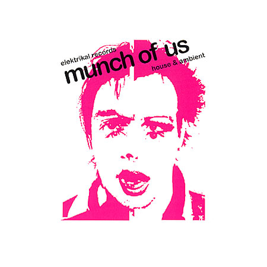

| Elektrical Records "munch of us" |
 |
| "munch of us". A compilation of house and ambient artists from
the electric underground of Copenhagen. 2 songs with Johnny Warehouse feat. The Thom and 2 songs with Hairwerk. www.elektrikalrecords.com Listen to clips of the cd or buy it here: www.cdbaby.com/cd/munchofus |